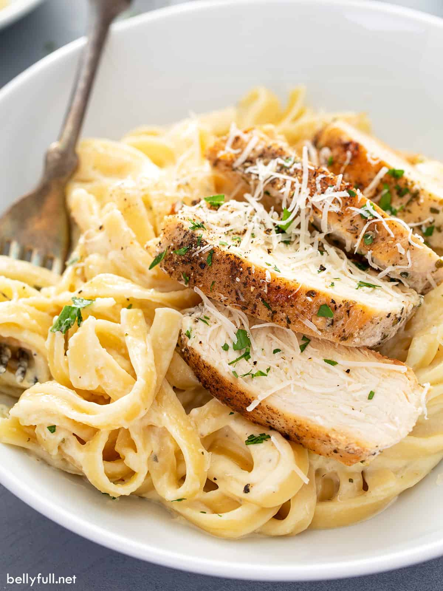

Chicken Alfredo
Home

Description
Chicken Alfredo is a rich, creamy, and hearty Italian-American pasta dish featuring fettuccine noodles tossed in a velvety sauce of butter, heavy cream, and Parmesan cheese, topping with seasoned, pan-fried chicken and garnished with parsley for a comforting, decadent meal.
Ingredients
FOR THE NOODLES
- 16 ounces dry fettuccine pasta
FOR THE CHICKEN
- 1 pound boneless, skinless chicken breasts
- 1 teaspoon Italian seasoning
- 3/4 teaspoon kosher salt
- 1/4 teaspoon pepper
- 2 tablespoons extra-virgin olive oil
- 1 tablespoon butter
FOR THE SAUCE
- 1/2 cup butter, cut into large cubes or slices
- 2 cups heavy whipping cream
- 1 clove garlic, minced
- 3/4 teaspoon garlic powder
- 3/4 teaspoon Italian Seasoning
- 1/4 teaspoon salt
- 1/4 teaspoon pepper
- 2 cups freshly grated Parmesan cheese
Instructions
- Make the noodles: Bring a large pot of salted water to a boil. Add the fettuccine and cook until al dente according to package directions, usually 10 minutes. Reserve 1/2 cup of the cooking water, then drain well. Set aside.
- Make the chicken: Season chicken breasts with the Italian seasoning, salt, and pepper.
- Warm the olive oil over medium-high heat in a large nonstick skillet. Once it's shimmering, swirl the pan to evenly distribute. Add the chicken and leave it undisturbed for 5-7 minutes, until the bottom is golden-brown. Flip over and add in 1 tablespoon of butter between them, picking up the pan to give it a gentle swirl to distribute. Continue cooking for another 5-7 minutes (or an internal temperature reaches 165 degrees F.)
- Transfer the chicken to a cutting board and let it rest for 3 minutes. Cut into 1/2 inch-thick slices. Tent with foil while you prepare the sauce.
- Make the Alfredo sauce: In the same pan, over medium-low heat, add the butter and cream; whisk until butter has melted.
- Add in the minced garlic, garlic powder, Italian seasoning, salt, and pepper; whisk until combined and smooth.
- Bring to a gentle simmer (do not boil) and cook for 3-4 minutes, whisking. constantly, until it starts to thicken.
- Stir in the parmesan cheese just until melted and the sauce is smooth. (If the sauce ends up too thick, add some of the reserved pasta cooking water, a few tablespoons at a time, to thin it out.)
- Assemble: Take sauce off the heat and immediately toss with the cooked fettuccine noodles.
- Divide the pasta among serving bowls and top with a few slices of chicken. Garnish with parsley, more Parmesan, and black pepper if desired.